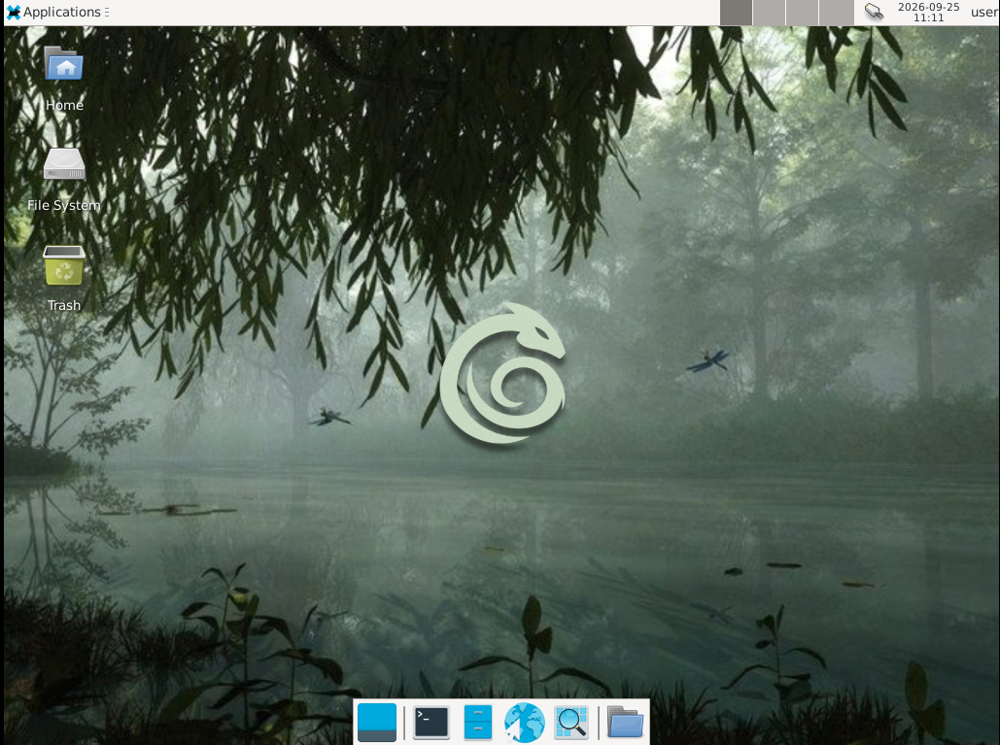
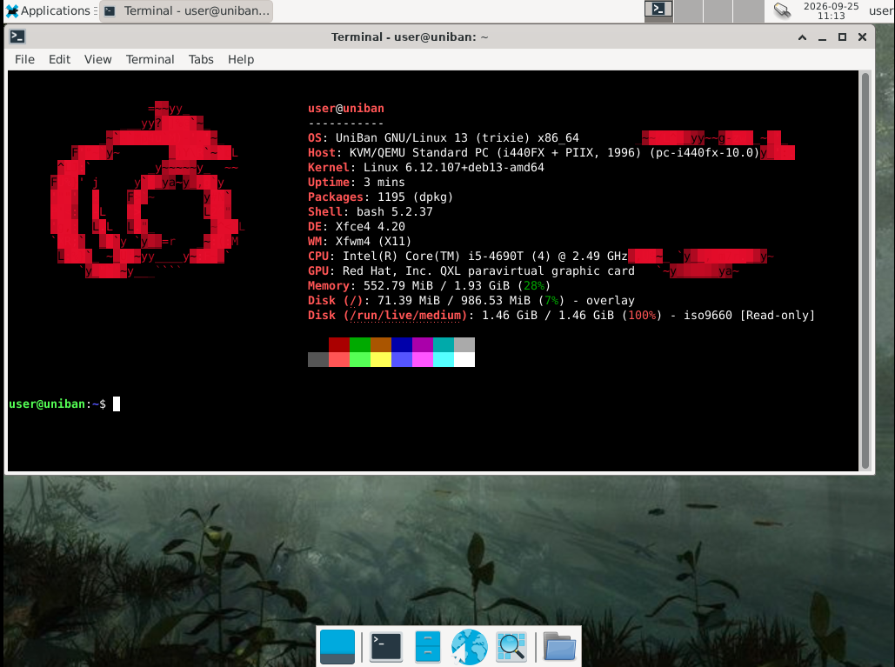
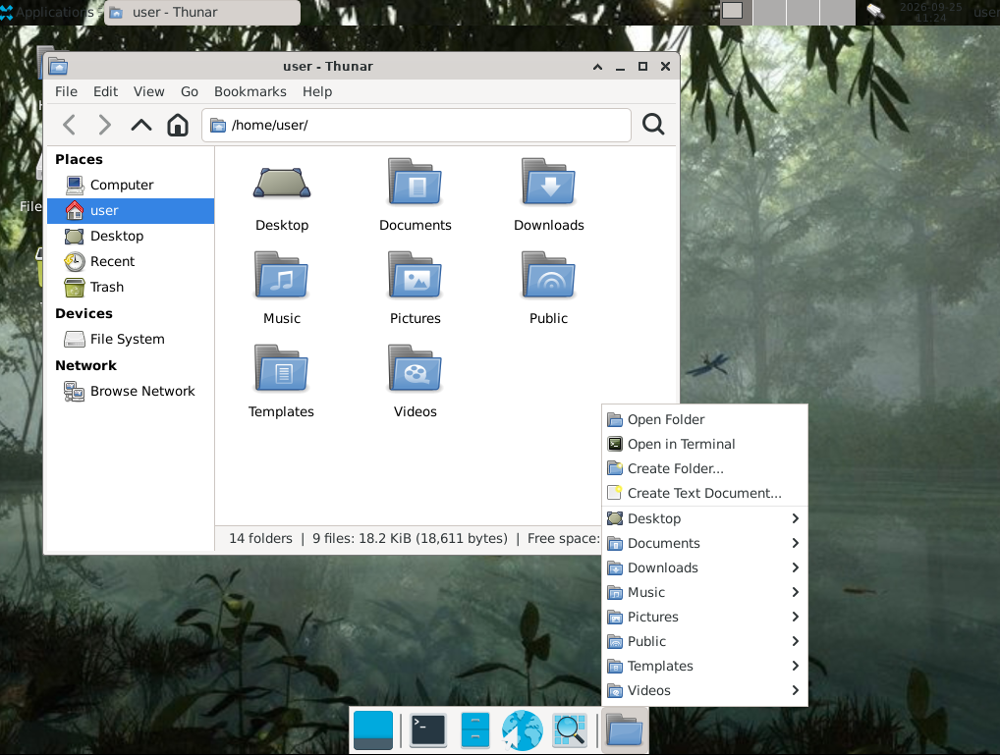

Leve
Ambiente otimizado para consumir menos recursos.
Uma distribuição baseada no Debian, criada para ser leve, simples e preparada para jogos e uso diário.
Ambiente otimizado para consumir menos recursos.
Ferramentas e componentes preparados para jogos.
Base Debian com foco em desempenho e estabilidade.
Interface limpa e fácil de entender.
O UniBan utiliza o Debian como base e adiciona ferramentas escolhidas para criar uma experiência mais simples e focada em desempenho.
A ideia é manter o sistema enxuto sem transformar a instalação e configuração em uma dor de cabeça.
Construído sobre uma base Debian para aproveitar seu ecossistema, estabilidade e grande quantidade de pacotes disponíveis.
Algumas imagens do ambiente do sistema.



Veja os requisitos, instalação e primeiros passos do UniBan.